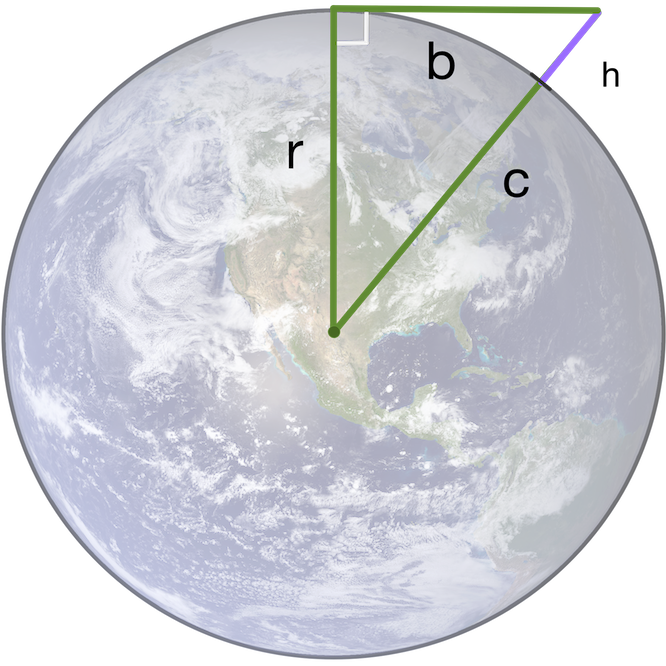

Earth Curvature Calculator
Accurately calculate the curvature you are supposed to see on the ball Earth.
Explanation:
The Earth's radius (r) is 6371 km or 3959 miles, which gives a circumference (c)of
c = 2 * π * r = 40 030 km based on numbers from Wikipedia
We wish to find the height (h) which is the drop in curvature over the distance (d)
Using the circumference we find that 1 unit of distance (km or mile) has the angle360° / 40030 km = 0.009°. The angle (a) is then a = 0.009 * distance (d)
The derived formula h = r * (1 - cos a) is accurate for any distance (d)
